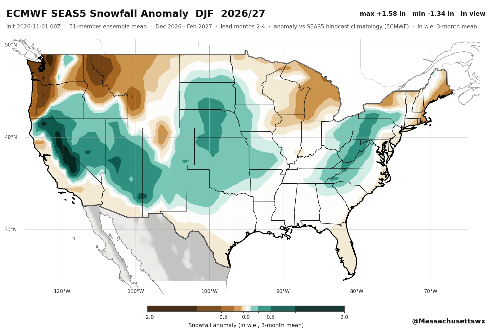
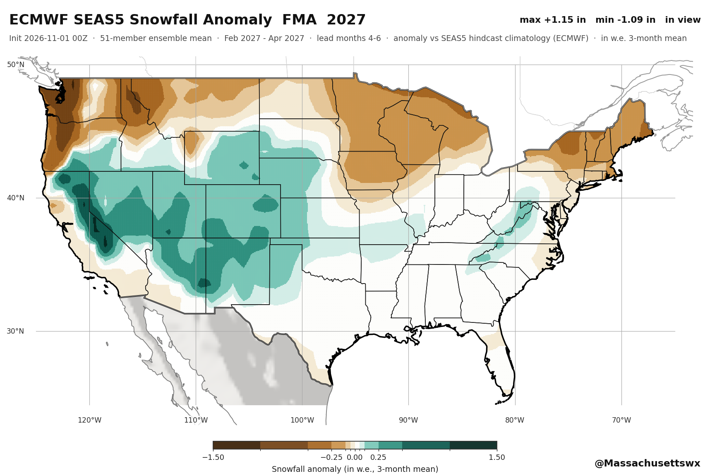
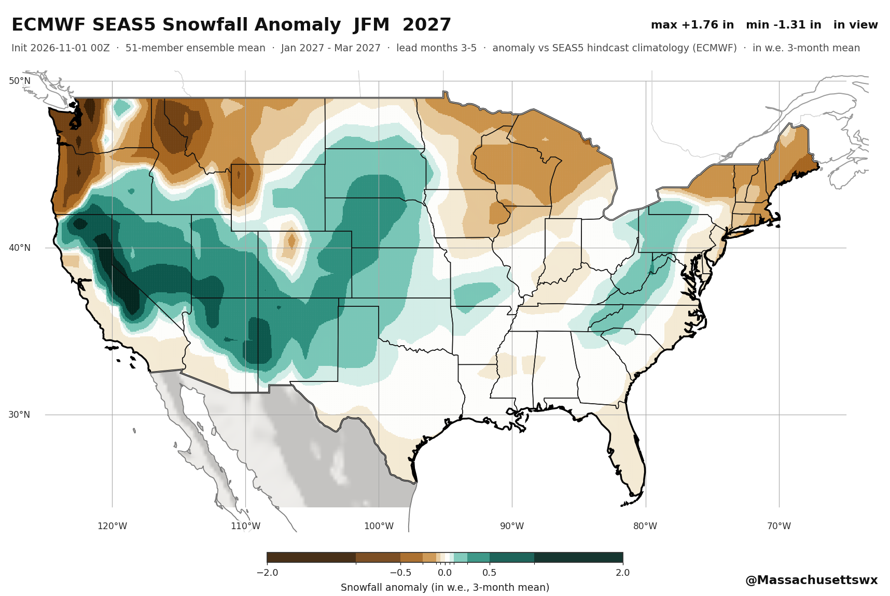
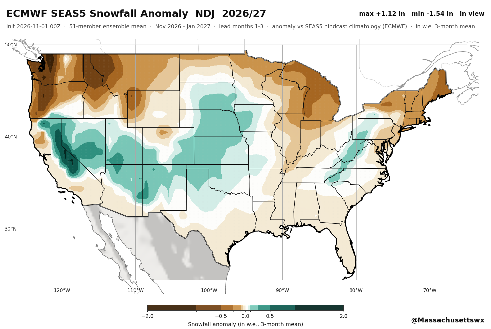
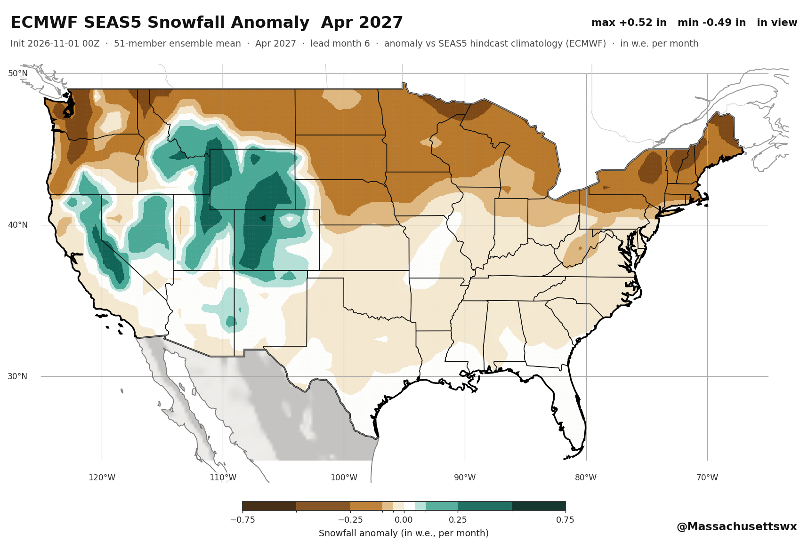
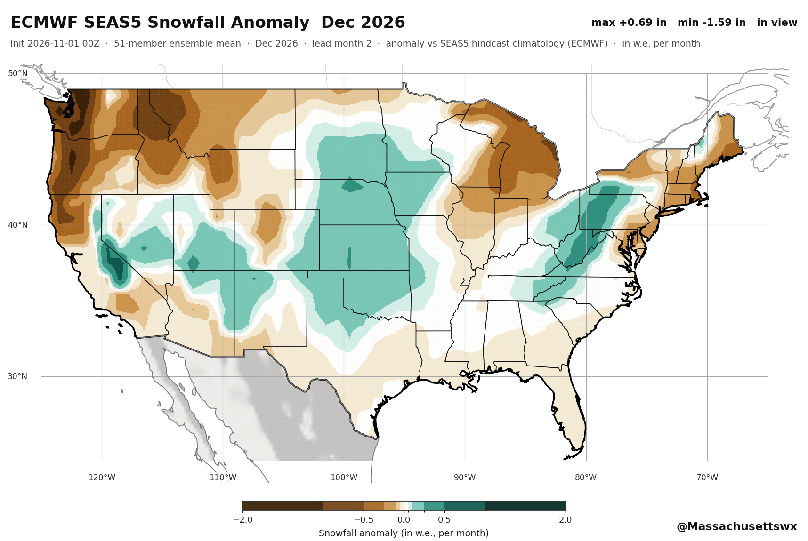
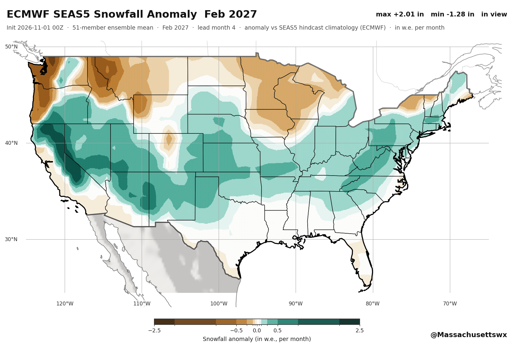
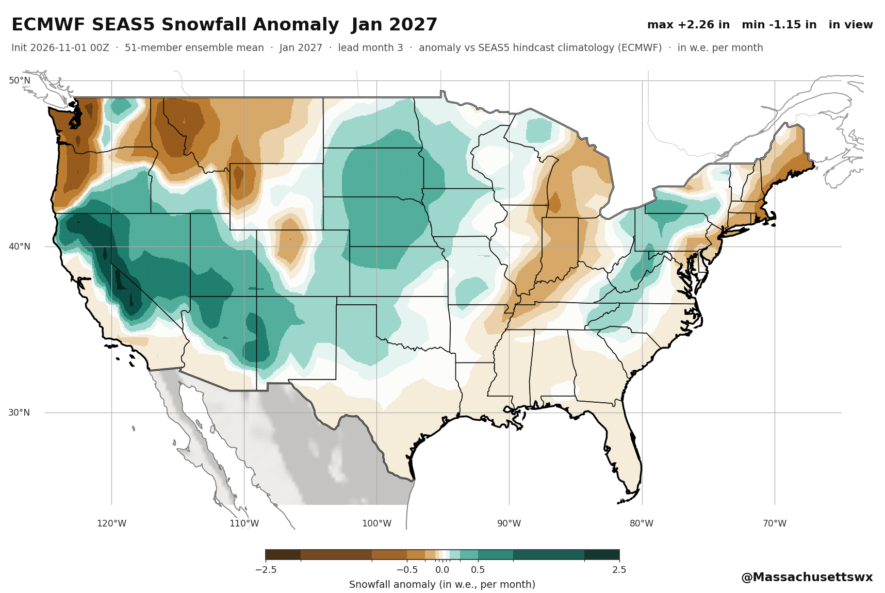
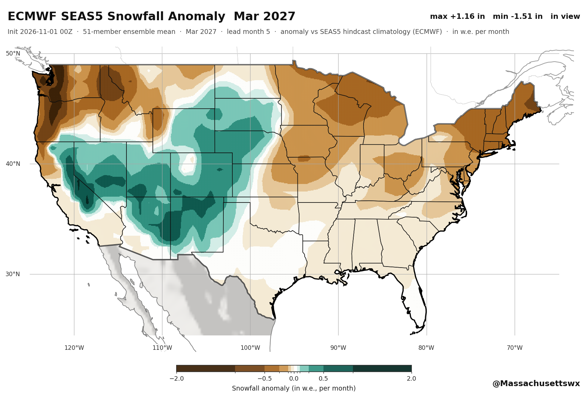
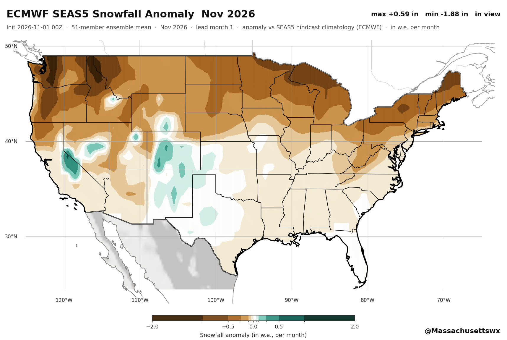

Monthly and three-month snowfall anomalies over the continental United States,
from ECMWF SEAS5 and other seasonal prediction systems that carry a snow variable.
Panels
Anomaly = seasonal-forecast snowfall minus the corresponding climatology.
Panels are in inches of water equivalent (1 in = 25.4 mm w.e.).
Brown = below average, teal = above average. The forecast field is clipped at the
US/Canada border.

DJF 2026/27
3-month mean · in w.e. · vs ECMWF SEAS5 hindcast climatology

FMA 2027
3-month mean · in w.e. · vs ECMWF SEAS5 hindcast climatology

JFM 2027
3-month mean · in w.e. · vs ECMWF SEAS5 hindcast climatology

NDJ 2026/27
3-month mean · in w.e. · vs ECMWF SEAS5 hindcast climatology

Apr 2027
monthly · in w.e. · vs ECMWF SEAS5 hindcast climatology

Dec 2026
monthly · in w.e. · vs ECMWF SEAS5 hindcast climatology

Feb 2027
monthly · in w.e. · vs ECMWF SEAS5 hindcast climatology

Jan 2027
monthly · in w.e. · vs ECMWF SEAS5 hindcast climatology

Mar 2027
monthly · in w.e. · vs ECMWF SEAS5 hindcast climatology

Nov 2026
monthly · in w.e. · vs ECMWF SEAS5 hindcast climatology
Seasonal systems with snow
Seasonal forecast monthly statistics on pressure levels
planned
no snow variable
Seasonal forecast monthly averages of ocean variables
sub-daily (6-hourly) original data · snow variables: snow_cover, snow_depth, snowfall
Seasonal forecast subdaily data on pressure levels
planned
no snow variable
C3S SIS hydrology Europe reforecast
planned
snow depth water equivalent · snow variables: snow_depth_water_equivalent
C3S SIS hydrology Europe seasonal
planned
snow depth water equivalent · snow variables: snow_depth_water_equivalent
Climatic suitability for the presence and seasonal activity of the Aedes albopictus mosquito for Europe derived from climate projections
planned
no snow variable
Method
Forecast
ECMWF SEAS5 (C3S system 51),
seasonal-monthly-single-levels, variable snowfall,
51-member ensemble. Provenance: the mean of the 51 monthly_mean
members reproduces ECMWF's separately served ensemble_mean product
to 1.4×10-5 relative.
Climatology
ECMWF's own hindcast_climate_mean for the
lead month — the standard seasonal-anomaly definition. The two fields share the
same 1° SEAS5 grid, so the difference is taken natively before display
interpolation.
Resolution
The CDS seasonal product is 1.00°; the maps are drawn on a
0.05° display grid with a 0.25° ERA5 hillshade basemap.
Map
Flat equirectangular projection (x compressed by cos 37°N),
domain 125°W–65°W / 24.5°N–50°N, 10° labelled graticule.